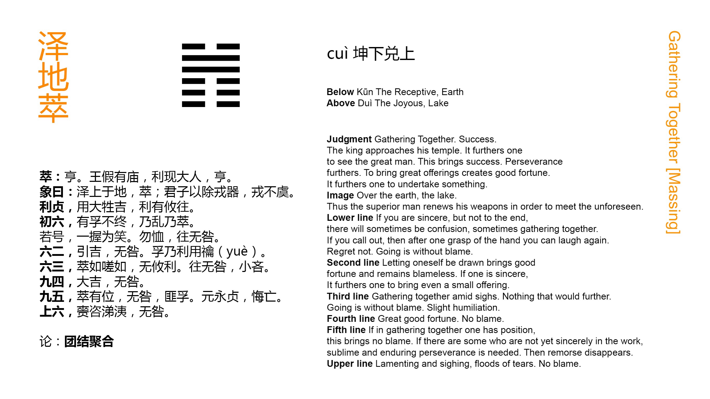

Chinese: 萃 ䷬ cuì

In (the state denoted by) Cuì ䷬, the king will repair to his ancestral temple. It will be advantageous (also) to meet with the great man; and then there will be progress and success, though the advantage must come through firm correctness. The use of great victims will conduce to good fortune; and in whatever direction movement is made, it will be advantageous.
1. The first SIX, divided, shows its subject with a sincere desire (for union), but unable to carry it out, so that disorder is brought into the sphere of his union. If he cry out (for help to his proper correlate), all at once (his tears) will give place to smiles. He need not mind (the temporary difficulty); as he goes forward, there will be no error.
䷬ changing to ䷐
Matching Line 1 in Adjacent Hexagram: ䷭
2. The second SIX, divided, shows its subject led forward (by his correlate). There will be good fortune, and freedom from error. There is entire sincerity, and in that case (even the small offerings of) the vernal sacrifice are acceptable.
䷬ changing to ䷮
Matching Line 2 in Adjacent Hexagram: ䷭
3. The third SIX, divided, shows its subject striving after union and seeming to sigh, yet nowhere finding any advantage. If he go forward, he will not err, though there may be some small cause for regret.
䷬ changing to ䷞
Matching Line 3 in Adjacent Hexagram: ䷭
4. The fourth NINE, undivided, shows its subject in such a state that, if he be greatly fortunate, he will receive no blame.
䷬ changing to ䷇
Matching Line 4 in Adjacent Hexagram: ䷭
5. The fifth NINE, undivided, shows the union (of all) under its subject in the place of dignity. There will be no error. If any do not have confidence in him, let him see to it that (his virtue) be great, long-continued, and firmly correct, and all occasion for repentance will disappear.
䷬ changing to ䷏
Matching Line 5 in Adjacent Hexagram: ䷭
6. The topmost SIX, divided, shows its subject sighing and weeping; but there will be no error.
䷬ changing to ䷋
Matching Line 6 in Adjacent Hexagram: ䷭
Cuì ䷬ denotes collecting together, or things so collected and hence this hexagram concerns the state of the kingdom when a happy union prevails between the sovereign and his ministers, between high and low; and replies in a vague way to the question how this state is to be preserved; by the influence of religion, and the great man, who is a sage upon the throne.
He, 'the king,' will repair to his ancestral temple, and meet in spirit there with the spirits of his ancestors. Whatever he does, being correct and right, will succeed. His religious services will be distinguished by their dignity and splendour. His victims will p. 159 he the best that can be obtained, and other things will be in harmony with them.
Line 1 is weak, and in the place of a strong line. It has a proper correlate in 4, but is separated from him by the intervention of two weak lines. The consequence of these things is supposed to be expressed in the first part of the symbolism; but the subject of the line is possessed by the desire for union, which is the theme of the hexagram. Calling out to his correlate for help, he obtains it, and his sorrow is turned into joy.
Line 2 is in its proper place, and responds to the strong ruler in 5, who encourages and helps the advance of its subject. He possesses also the sincerity, proper to him in his central position; and though he were able to offer only the sacrifice of the spring, small compared with the fulness of the sacrifices in summer and autumn, it would be accepted.
Line 3 is weak, in the place of a strong line, and advanced from the central place. The topmost line, moreover, is no proper correlate. But its subject is possessed by the desire for union; and though 2 and 4 decline to associate with him, he presses on to 6, which is also desirous of union. That common desire brings them together, notwithstanding 3 and 6 are both divided lines; and with difficulty the subject of 3 accomplishes his object.
[But that an ordinary rule for interpreting the lineal indications may be thus overruled by extraordinary considerations shows how much of fancy there is in the symbolism or in the commentaries on it.]
Line 4 has its correlate in 1, and is near to the ruling line in 5. We may expect a good auspice for it; but its being strong in an odd place, calls for the caution which is insinuated.
Line 5 is strong, central, and in its correct position. Through p. 160 its subject there may be expected the full realisation of the idea of the hexagram.
Line 6, weak, and at the extremity of the figure, is still anxious for union; but he has no proper correlate, and all below are united in 5. Its subject mourns his solitary condition; and his good feeling will preserve him from error and blame.